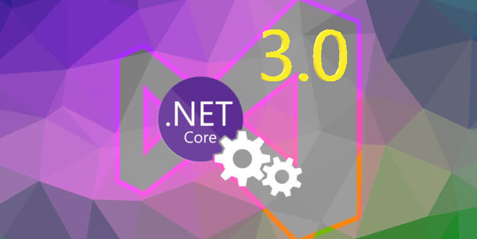
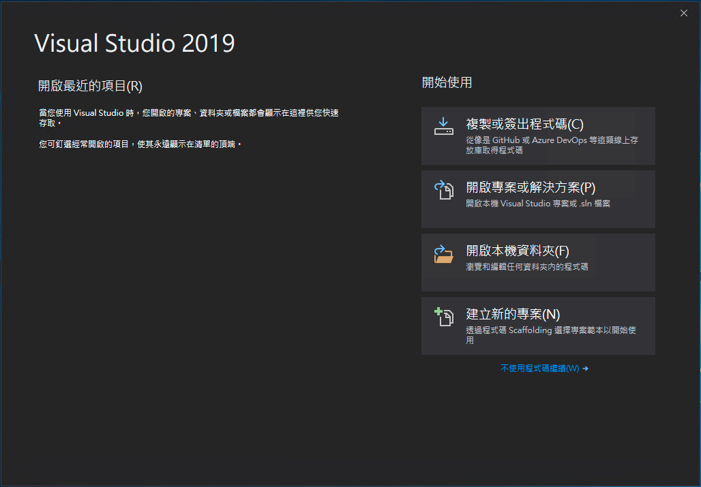
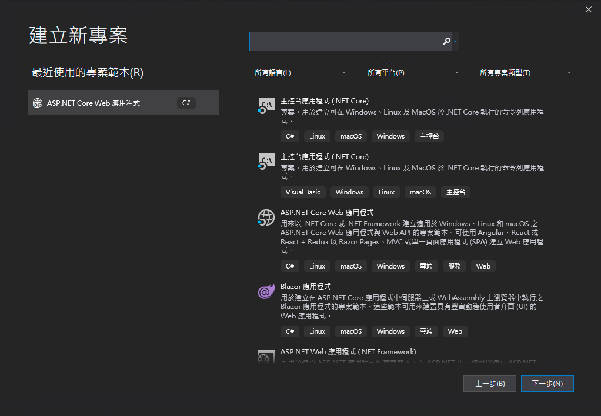
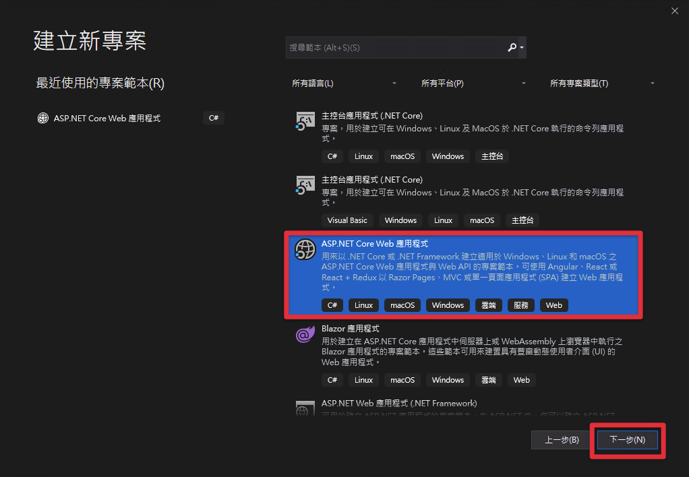
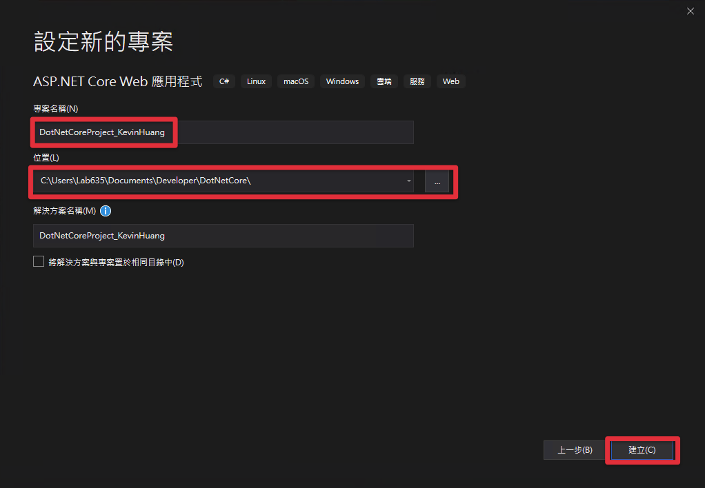
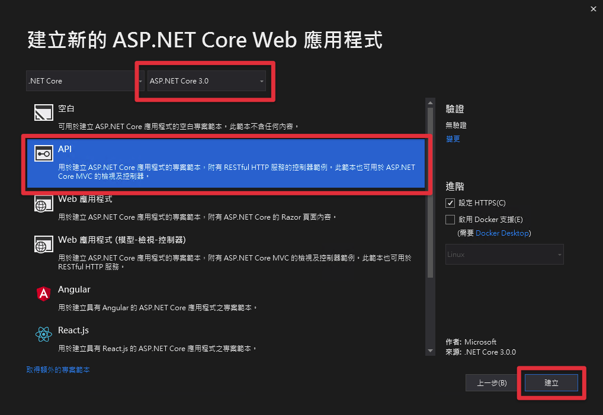
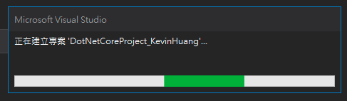
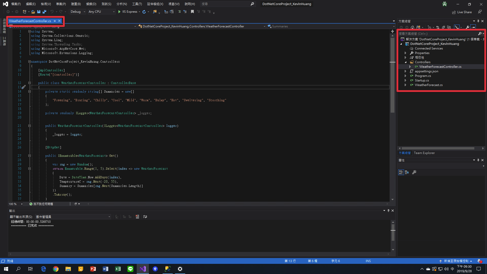
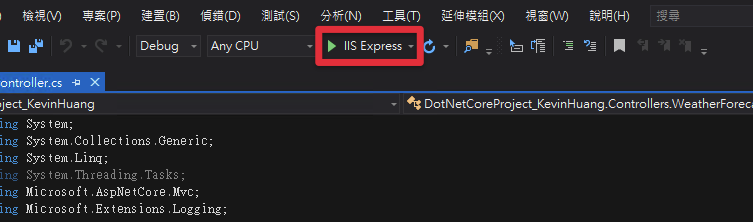
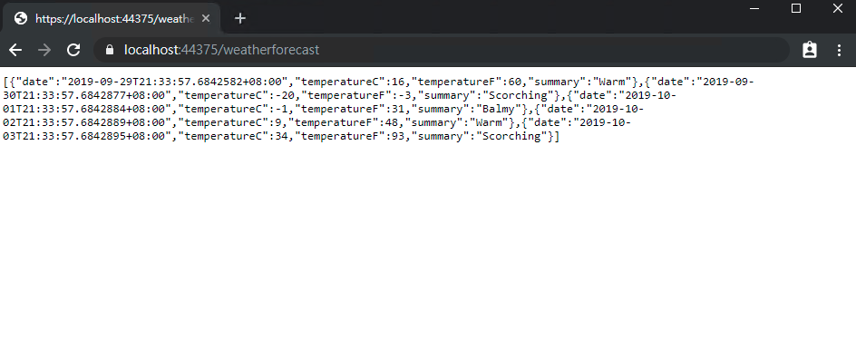

前言
以前剛開始寫程式的時候，第一個接觸到的程式語言就是C#，使用的框架則是ASP.Net Framework，當時整天抱著一本C# MVC的書每天K，K到最後都有點昏頭了。而最近剛好開始有機會分享自己所學，因此想要從頭開始整理一下自己在.Net學習的過程，並且將這些歷程中的重點分享給身邊想學的人。
這幾年來除了.Net Framework，很多人也開始使用微軟另一個開發框架.Net Core，而這兩種開發框架之間到底有什麼不同呢？讓我們一起看下去吧！
這一系列的文章比較偏向讓大家看完能夠有一些比較基本的觀念，並且會附加比較多的實作教學，因此可能解釋一些觀念的時候，不會用太精細的方式來與大家做探討，請大家多多見諒！主要想讓大家對觀念的理解可以剛好輔助實作就好，如果對觀念有更深的興趣歡迎尋找更多文章，或這看我文中提到的更深入的文章，也可以在下方回應與大家分享自己看到的資訊哦～！
什麼是.Net Core？什麼是開發框架？
.Net Core介紹

簡單來說.Net Core是ASP.Net新一代的開發框架，是微軟開發的第一個跨平台的框架。跨平台的意思就是指它相較於.NET Framework只能運行在Windows上的這個限制，.Net Core可以在Windows、MacOSX、Linux三種作業系統上運行。但因為Windows有Visual Studio這個強大的IDE，所以我還是都用MAC開虛擬機跑Windows再跑VS來開發啦，但當你要部署的時候就可以考慮用個Linux系統，裝個.Net Core RunTime環境，就可以把專案架設起來了，挺方便的。
開發框架簡述
簡單來說，開發框架就是有人將一些常用的可以重複使用的程式寫成一包工具，讓想要開發者可以呼叫框架方法，就能省去開發一些常用又複雜的功能，用最快速的方式開發自己的應用程式。
使用框架的好處
使用框架最大的好處就是，可以站在巨人的肩膀上，來開發自己想要的功能。假設今天想要蓋一棟房子，你是自己從頭一磚一瓦的蓋起來比較簡單呢，還是你拿一個現成的房屋骨架在上面添添補補比較容易？一定是利用半成品的骨架，加上一些自己需要的東西比較容易的，這就是使用框架可以帶來的好處。
建立第一個.Net Core API專案
開發環境
我目前在Window 10中安裝的開發環境如下，如果還沒安裝開發環境的可以先去安裝一下，如果真的安裝遇到問題可以下面回應我哦：
Visual Studio 2019 Community（安裝過程記得勾選「.Net Core跨平台開發」）安裝連結
SQL Server Developer 2017 安裝連結
SQL Server Management Studio 2018 安裝連結
建立專案
- 首先請打開Visual Studio 2019

- 點擊「建立新的專案」，之後會進到以下畫面

- 選擇「ASP .NET Core Web 應用程式」，並點選「下一步」

- 進入到專案資訊設定畫面，請將專案名稱改為“DotNetCoreProject_你的名字”，選取要儲存的路徑之後，點選「建立」

- 接下來要選擇專案的框架及架構，框架部分我們選擇.Net Core 最新版3.0來實作，而專案架構我們選「API」架構，來作為應用程式的後端。最後點選「建立」

- 等待Visual Studio幫你建立專案

- 專案建立成功的畫面如下，可以檢查一下右邊的專案目錄是不是與下圖相同，也可以點開圖中的「Controllers/WeatherForecastController.cs」來看看裡面的程式碼是否跟下圖中一樣

- 點擊上方「IIS Express」來運行專案

- 運行後瀏覽器畫面應該如下圖，如果有顯示這樣型態的資料，就代表你的.Net Core 3.0 API專案成功建立並且可以運行囉！
